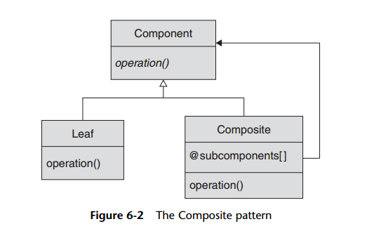
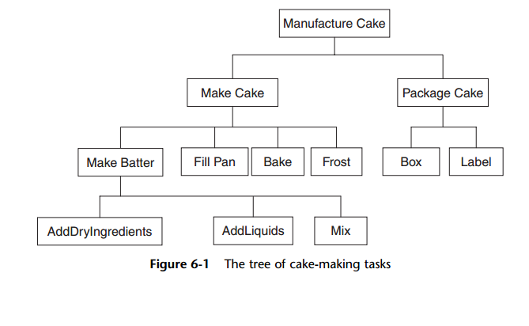

Composite pattern

The GoF called the design pattern for our “the sum acts like one of the parts” situation
the Composite pattern. You will know that you need to use the Composite pattern
when you are trying to build a hierarchy or tree of objects, and you do not want
the code that uses the tree to constantly have to worry about whether it is dealing with
a single object or a whole bushy branch of the tree.
To build the Composite pattern (Figure 6-2), you need three moving parts. First,
you need a common interface or base class for all of your objects.The GoF call this base
class or interface the component. Ask yourself, “What will my basic and higher-level
objects all have in common?” In baking cakes, both the simple task of measuring flour
and the much more complex task of making the batter take a certain amount of time.
Second, you need one or more leaf classes—that is, the simple, indivisible building
blocks of the process. In our cake example, the leaf tasks were the simple jobs, such as
measuring flour or adding eggs. In our organization example, the individual workers
were the leaves. The leaf classes should, of course, implement the Component interface.
Third, we need at least one higher-level class, which the GoF call the composite
class. The composite is a component, but it is also a higher-level object that is built
from subcomponents. In the baking example, the composites are the complex tasks
such as making the batter or manufacturing the whole cake—that is, the tasks that are made up
of subtasks. For organizations, the composite objects are the departments
and divisions.
